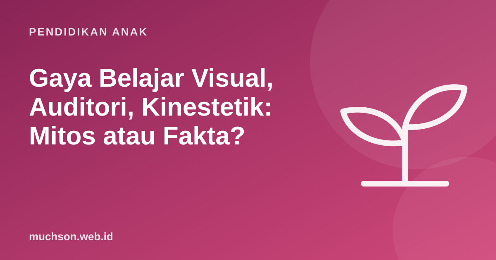

Beranda › Artikel › Pendidikan Anak
Pendidikan AnakGaya Belajar Visual, Auditori, Kinestetik: Mitos atau Fakta?
"Anak saya tipe visual, jadi harus belajar pakai gambar." Kalimat ini sangat populer di kalangan orang tua dan guru. Banyak tes gaya belajar beredar di internet. Masalahnya, penelitian yang dirancang untuk mengujinya tidak menemukan bukti yang kuat. Artikel ini menjelaskan apa yang sebenarnya diketahui ilmu pendidikan, dan apa yang lebih layak menjadi fokus.

Apa klaimnya?
Teori gaya belajar (sering disingkat VAK: visual, auditori, kinestetik) mengatakan setiap anak punya satu cara belajar terbaik, dan ia akan belajar lebih baik bila materi disampaikan sesuai gaya itu. Anak visual dengan gambar, anak auditori dengan mendengar, anak kinestetik dengan bergerak.
Bagian pertama terdengar masuk akal: anak memang punya preferensi. Ada yang lebih suka menggambar, ada yang suka bercerita. Yang dipersoalkan adalah bagian kedua: apakah mencocokkan cara mengajar dengan preferensi itu membuat anak benar-benar belajar lebih baik?
Apa kata penelitian?
Pada 2008, Harold Pashler dan rekan-rekannya menerbitkan tinjauan di jurnal Psychological Science in the Public Interest. Mereka menjelaskan bahwa untuk membuktikan teori ini, dibutuhkan desain penelitian tertentu: anak dikelompokkan berdasarkan gaya belajarnya, lalu masing-masing diajar dengan beberapa cara, dan hasilnya harus menunjukkan bahwa setiap kelompok belajar paling baik dengan caranya sendiri. Setelah meninjau literatur, mereka menyimpulkan bahwa penelitian dengan desain yang tepat sangat sedikit, dan yang ada tidak mendukung teori ini.
Kesimpulan para peneliti bukan "semua anak sama", melainkan: belum ada bukti yang memadai bahwa mencocokkan pengajaran dengan gaya belajar meningkatkan hasil belajar. Sumber daya pendidikan lebih baik dipakai untuk strategi yang terbukti.
Kenapa mitos ini bertahan?
- Terasa benar. Kita memang punya preferensi, jadi teori ini cocok dengan pengalaman.
- Memberi harapan sederhana. Satu label untuk menjelaskan kesulitan belajar terasa melegakan.
- Tes gaya belajar mudah dibuat dan dijual. Hasilnya menarik untuk dibagikan.
- Sebagian benar dalam bentuk lain. Materi tertentu memang paling baik disajikan dengan cara tertentu, misalnya peta dengan gambar dan musik dengan mendengar. Itu soal materinya, bukan soal anaknya.
Bahaya label gaya belajar
Yang terbukti efektif untuk semua anak
Tinjauan besar oleh John Dunlosky dan rekan (2013) menilai sepuluh teknik belajar populer. Dua teknik mendapat nilai tertinggi dan berlaku luas untuk berbagai usia dan materi:
| Strategi | Artinya | Contoh untuk anak |
|---|---|---|
| Latihan mengingat (practice testing) | Menguji diri, bukan hanya membaca ulang | Tutup buku, lalu ceritakan isinya; kuis kecil buatan sendiri |
| Belajar berjarak (distributed practice) | Mengulang sedikit-sedikit di hari berbeda | 10 menit perkalian setiap hari, bukan 1 jam sekali seminggu |
| Gabungan kata dan gambar (dual coding) | Penjelasan lisan atau tulisan didampingi diagram | Menggambar siklus air sambil menjelaskannya |
| Contoh konkret | Konsep abstrak diberi contoh nyata | Pecahan dengan potongan kue |
| Menjelaskan dengan kata sendiri | Anak mengajari orang lain | Anak menjelaskan PR kepada adik atau boneka |
Perhatikan bahwa "gabungan kata dan gambar" berbeda dari gaya belajar visual. Ini bukan soal anak tertentu yang visual, melainkan semua anak cenderung terbantu bila penjelasan verbal didukung visual yang relevan.
Jadi, apa yang perlu diperhatikan orang tua?
- Perhatikan minat, bukan label. Minat anak pada menggambar atau musik adalah pintu masuk, bukan batasan.
- Pilih cara sesuai materi. Geometri dengan gambar dan benda, bahasa dengan mendengar dan berbicara, olahraga dengan bergerak.
- Pakai banyak jalur. Lihat, dengar, lakukan, jelaskan. Kombinasi memperkuat ingatan.
- Fokus pada strategi yang terbukti: latihan mengingat dan belajar berjarak.
Coding adalah contoh kegiatan yang secara alami memadukan banyak jalur: membaca instruksi, melihat hasil, menyusun dengan tangan, dan menjelaskan karya. Anak tidak perlu "tipe" tertentu untuk menikmatinya. Coba bersama lewat dua pelajaran gratis PixelKode.
Tanya jawab
Apakah gaya belajar visual, auditori, kinestetik itu nyata?
Apakah tes gaya belajar berguna?
Strategi belajar apa yang terbukti efektif?
Anak saya lebih suka bergerak. Bagaimana?
Sumber dan bacaan lanjut
- Pashler, H. dkk. (2008). Learning styles: Concepts and evidence. Psychological Science in the Public Interest
- Dunlosky, J. dkk. (2013). Improving students' learning with effective learning techniques. Psychological Science in the Public Interest
- Roediger, H. L., & Karpicke, J. D. (2006). Test-enhanced learning. Psychological Science